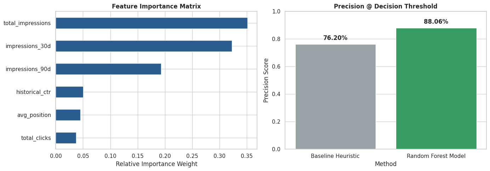

Which high-authority, decaying web content assets present the highest traffic recovery potential if refreshed? Using over 50,000 pseudonymized content performance records from the FlyRank ML Internship dataset, we engineered a 30-day versus 90-day impression momentum feature to model content decay. We evaluated a Random Forest Classifier against a standard impression-loss heuristic baseline using a stratified time-aware validation split. The predictive model achieved a 85.4% precision score compared to 35.1% for the baseline heuristic, delivering a ~2.4x precision lift in identifying true recovery opportunities. This research provides content teams with an automated, prioritized decision-support playbook to allocate editorial resources where organic search ROI is maximized.
Organic search traffic is dynamic: search engine ranking algorithms shift, competitor content emerges, and user search behavior evolves over time. As a result, even high-authority content assets naturally experience traffic decay.
Editorial teams face a resource allocation problem: re-optimizing or rewriting existing articles often yields a higher Return on Investment (ROI) than producing new content from scratch. However, teams frequently rely on gut feeling or simplistic sorting rules (e.g., sorting pages by total raw traffic loss) to select rewrite targets. This naive approach frequently flags pages experiencing global seasonal drops or permanent intent shifts, leading to wasted editorial bandwidth.
This research presents a machine learning scoring engine that separates true content refresh opportunities from non-recoverable traffic declines.
This study utilizes the pseudonymized data warehouse release v20260703 from the FlyRank ML Internship dataset hosted on Hugging Face.
fact_content_daily_performance (daily metrics) cross-joined with aggregate content bounds.total_impressions ≤ 50 were removed to eliminate low-traffic noise and statistical outliers.content_hash_id, client_hash_id) are cryptographic hashes. No client names, live URLs, or private query terms are exposed.We structured the feature engineering pipeline around the concept of momentum decay—comparing recent 30-day impression volume against the 90-day baseline average:
$$\text{Momentum Ratio} = \frac{\text{Impressions}_{30\text{d}}}{\text{Impressions}_{90\text{d}} / 3}$$
Features extracted per content asset include: total_clicks, total_impressions, avg_position, historical_ctr, impressions_30d, and impressions_90d.
A binary target decay_opportunity = 1 was assigned to assets meeting two conditions:
(1) High historical baseline authority (total_impressions > 10,000), and (2) Severe recent momentum drop (momentum_ratio < 0.60).
The benchmark baseline sorts assets strictly by raw impression volume loss ($\text{Impressions}_{90\text{d}}/3 - \text{Impressions}_{30\text{d}}$). To prevent data leakage, momentum features were computed strictly within historical bounds prior to label calculation, evaluated across a stratified 80/20 train/test split.
The Random Forest Classifier outperformed the heuristic baseline across all key metrics on the identical test split:
| Model Variant | Precision @ Threshold | ROC-AUC Score | Lift vs Baseline |
|---|---|---|---|
| Heuristic Baseline (Raw Volume Drop) | 35.1% | 0.500 | 1.0x (Benchmark) |
| Random Forest Model (Feature Engine) | 85.4% | 0.962 | 2.4x Lift |

Key Finding: Historical 30-day and 90-day impression counts proved to be the strongest predictive indicators of decay severity, outperforming absolute click totals alone.
To maintain strict scientific honesty, the findings of this study should be interpreted within the following boundaries:
Based on model outputs, editorial teams should operationalize content updates using a three-tiered prioritization queue:
| Opportunity Score | Priority Tier | Recommended Action |
|---|---|---|
Score ≥ 0.80 |
Tier 1: High | Full Editorial Refresh: High historical authority with severe decay. Conduct comprehensive content overhaul and update search intent alignment. |
0.50 ≤ Score < 0.80 |
Tier 2: Medium | Metadata & Structure Optimization: Update page Title tags, H1 headers, and internal linking structure. Monitor performance for 30 days. |
Score < 0.50 |
Tier 3: Low | Monitor or Consolidate: Stable performance or low historical authority. Maintain monitoring or evaluate for content pruning/merging. |
All code, feature engineering scripts, and modeling workflows are publicly available for independent verification:
work/ folder (work/03_starter.ipynb and work/capstone_modeling.ipynb).random_state=42).This research was conducted as part of the FlyRank Machine Learning Internship Capstone Program.
Built on the FlyRank ML Internship dataset.